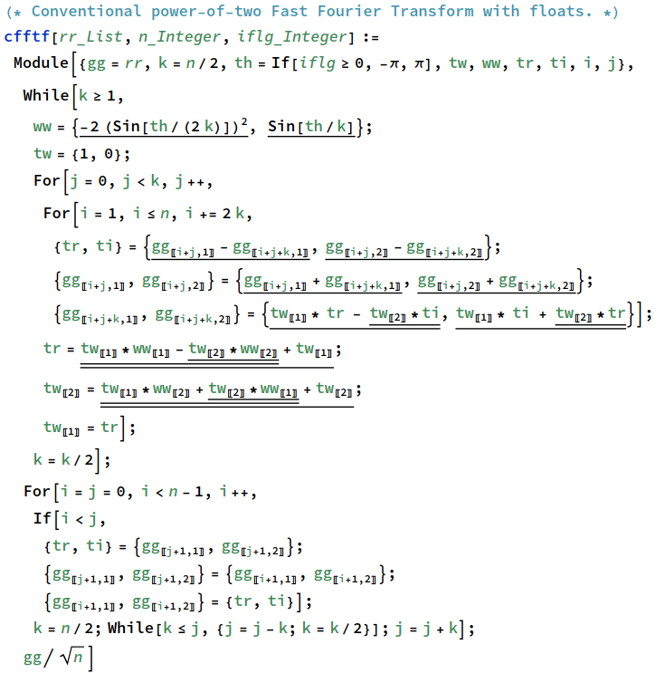

11. 快速傅里叶变换(本节未完成)¶
这是一个普通版本的快速傅立叶变换，有浮点形式和posit形式。 float 形式使用融合乘加，而 posit 形式在融合 \(a\times b-c\times d\) 形式的复杂运算方面稍微走得更远。
浮点版本

Fig. 11.1 image-20230717101706592¶
posit版本
Fig. 11.2 image-20230717101756063¶
首先尝试用半精度
setfloatenv[{16, 5}]
在输入的第二项放一个1， 然后我们做正向和反向的FFT，应该回到接近起始点的地方
Fig. 11.3 image-20230717102040706¶
舍入误差触及正弦和余弦不是特殊角度的点。 这是总误差
Fig. 11.4 image-20230717102133579¶
然后用posit做同样的事情
Fig. 11.5 image-20230717102206367¶
通常的基准是 1024 点。 用随机选择的 -1、0 或 1 填充所有值（地震勘探者和射电天文学家经常使用此类低精度输入）并测量总误差：
Fig. 11.6 image-20230717102327967¶
下面是posit版本

Fig. 11.7 image-20230717102353488¶